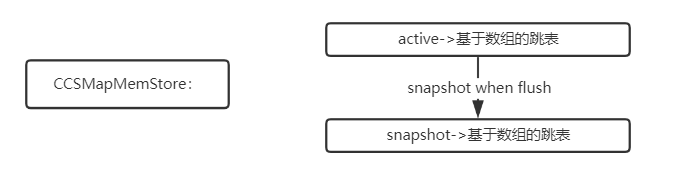

Ch05-HBase 之 MemStore
October 30, 2020
HBase memstore 也被称为写缓存，优化大概可以分为三个阶段，其中每一种都是在上一次的基础上进行不断优化得到。memstore 最底层的数据结构都是 skiplist。
1. 分类 #
1.1 DefaultMemstore #
1.1.1 引入 MemStoreLAB #
对于 HBase 这样基于 LSM 实现的 MemStore 来说，上述实现方案每写入一个 KeyValue，在没有写入 ConcurrentSkipList 之前就需要申请一个内存对象，这些对象在 flush 之前会一直存在，随着 GC 这些内存对象可能会晋升到老生代，尤其执行完 Major GC 后会存在大量的非常小的内存碎片，这些内存碎片会引起频繁的 Full GC，而且每次 Full GC 的时间会异常的长。针对上面的问题，MemStore 借鉴 TLAB（Thread Local Allocation Buffer）机制，实现了 MemStoreLAB，简称 MSLAB。
1.1.1.1 原理 #
- 一个 KeyValue 写入之后不再单独为 KeyValue 申请内存，而是提前申请好一个 2M 大小的内存区域（Chunk）。
- 将写入的 KeyValue 顺序复制到申请的 Chunk 中，一旦 Chunk 写满，再申请下一个 Chunk。
- 将 KeyValue 复制到 Chunk 中后，生成一个 Cell 对象（这个 Cell 对象在源码中为 ByteBufferChunkKeyValue），这个 Cell 对象指向 Chunk 中的 KeyValue 内存区域。
- 将这个 Cell 对象作为 Key 和 Value 写入 ConcurrentSkipListMap 中。
- 原生的 KeyValue 对象写入到 Chunk 之后就没有再被引用，所以很快就会被 Young GC 回收掉。
1.1.1.2 配置 #
hbase.hregion.memstore.mslab.enabled=true
1.1.2 引入 ChunkPool #
MSLAB 机制中 KeyValue 写入 Chunk，如果 Chunk 写满了会在 JVM 堆内存申请一个新的 Chunk。引入 ChunkPool 后，申请 Chunk 都从 ChunkPool 中申请，如果 ChunkPool 中没有可用的空闲 Chunk，才会从 JVM 堆内存中申请新 Chunk。如果一个 MemStore 执行 flush 操作后，这个 MemStore 对应的所有 Chunk 都可以被回收，回收后重新进入池子中，以备下次使用。
1.1.2.1 原理 #
每个 RegionServer 会有一个全局的 Chunk 管理器，负责 Chunk 的生成、回收等。MemStore 申请 Chunk 对象会发送请求让 Chunk 管理器创建新 Chunk，Chunk 管理器会检查当前是否有空闲 Chunk，如果有空闲 Chunk，就会将这个 Chunk 对象分配给 MemStore，否则从 JVM 堆上重新申请。每个 MemStore 仅持有 Chunk 内存区域的引用，如图中 MemStoreLAB 的小格子。
1.1.2.2 配置 #
hbase.hregion.memstore.chunkpool.maxsize=2097152
1.1.3 引入 Offheap #
除过 ChunkPool 之外，HBase 2.x 版本针对 Chunk 对象优化的另一个思路是将 Chunk 使用的这部分内存放到的堆外。
1.1.3.1 原理 #
Chunk 堆外化实现比较简单，在创建新 Chunk 时根据用户配置选择是否使用堆外内存，如果使用堆外内存，就使用 JDK 提供的 ByteBuffer.allocateDirect 方法在堆外申请特定大小的内存区域，否则使用 ByteBuffer.allocate 方法在堆内申请。如果不做配置，默认使用堆内内存，用户可以设置 hbase.regionserver.offheap.global.memstore.size 这个值为大于 0 的值开启堆外，表示 RegionServer 中所有 MemStore 可以使用的堆外内存总大小。
1.1.3.2 配置 #
hbase.regionserver.offheap.global.memstore.size=0
1.2 CompactingMemStore #
1.2.1 原理
將 Chunk 做一次封裝形成 Segment，能夠支持写入操作的叫做 MutableSegment，不能支持的叫做 ImmutableSegment。当 MutableSegment 的大小超过 2M，就会执行 In-memory Flush 操作，将 MutableSegment 变为 ImmutableSegment，并重新生成一个新的 MutableSegment 接收写入。每次执行完 In-memory Flush 之后，RegionServer 都会启动一个异步线程执行 In-memory Compaction，将 Chunk 复制到（这里没有深拷贝）数组里面。
如果参与 Compaction 的 Segment 个数超过 1 个，会有两种 Compaction 的形式：Merge 和 Compact。
- Merge：顺序遍历 Segment，取出对应的 Cell，然后顺序写入 CellChunkImmutableSegment 中
- Compact：顺序遍历 Segment，读取对应 Cell 之后会检测是否有多个版本的 Cell，如果存在超过设置版本数的 Cell，就将老版本的 Cell 删掉。因为存在原始 KV 的变更，所以新生成的 Chunk 会进行重建，将其顺序写入到 CellChunkImmutableSegment 中
1.2.2 配置
hbase.hregion.compacting.memstore.type=BASIC
hbase.hregion.compacting.pipeline.segments.limit=2
hbase.memstore.inmemoryflush.threshold.factor=0.014
1.3 CCSMapMemStore #
阿里巴巴提出，尚未合入 HBase。CCSMapMemStore 是将整个跳表实现替换掉，无论是 active 还是 snapshot，从最大程度上减少了对象的创建，也避免了 CompactingMemstore 中 compact 带来的开销。
